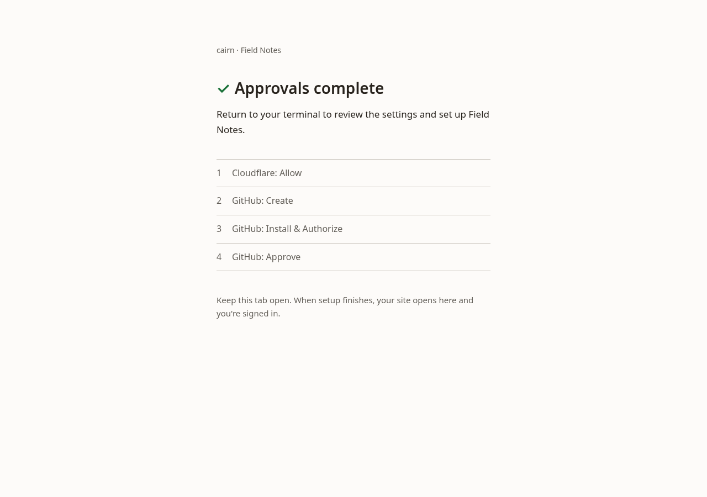
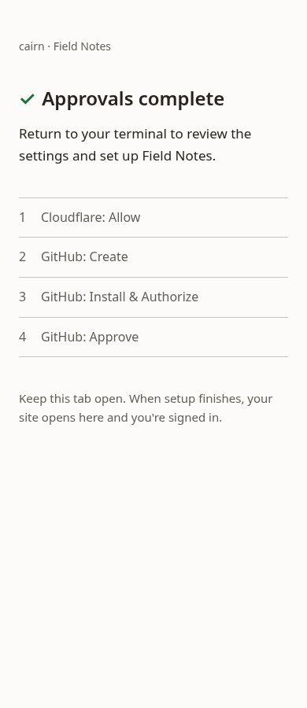
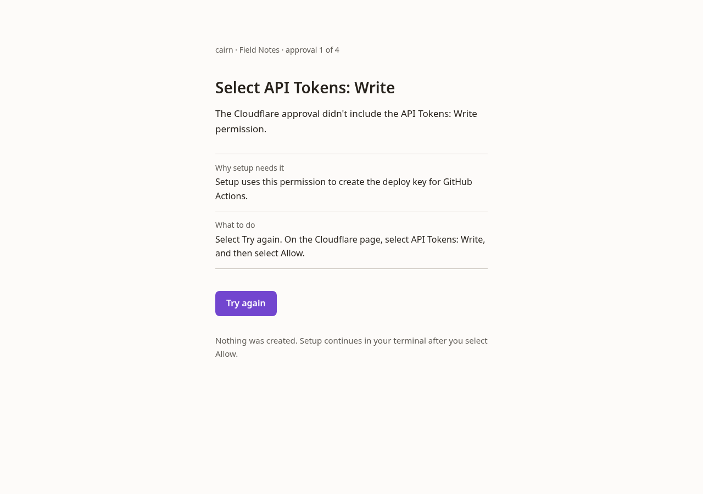
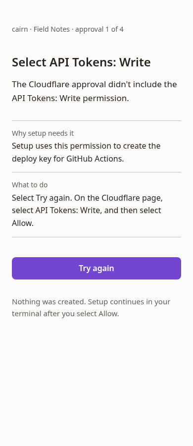

Every screen of the redesigned site setup, built in Go with Bubble Tea on made-up data, for a look before the written design. Nothing here is product code. Each screen was captured in a real terminal at 80 and 60 columns, in dark and light, and a separate reviewer graded the set before this page went up.
Run it
In Ptyxis. The whole flow takes about 30 seconds, and the clock runs fast.
cd /tmp/claude-1000/-var-home-glw907-Projects-cairn-cms/3d778db3-3ae2-4251-b022-407d8b8c784f/scratchpad/proto
go run .
--several-domainsadds the domain question after the approvals--fail-deployends in the failed first deploy--no-domainends in the missing-domain check--sshshows the remote-session stop--screen <name>jumps to one screen; the names are below
Setup serves these from the local loopback. Everything between them is GitHub's and Cloudflare's own pages.
All four approvals done
Sends you back to the terminal, where the summary waits for you to confirm.

1280 wide

390 wide
An approval needs another try
Shown when the Cloudflare grant comes back without API Tokens Write ticked.

1280 wide

390 wide
Calls I made building it
Setup runs inline, not full screen. The screen in progress redraws in place, and the last frame (the live URL or the failure) stays in your scrollback as the record.
Cloudflare is the first approval, so the domain check runs before anything is created on GitHub.
Names are settled before the browser opens, because the repository is created during the approvals. The summary shows them read-only. Only the sign-in email can be edited there.
With several domains, the choice is its own short question after the approvals, instead of a list on the summary. It fits a 60 by 24 window with five domains.
Theme and AI crawlers carry no reason on the summary, because you just chose them. The four derived names share one reason line.
No borders anywhere. Color appears only on state marks: green for done, red for the one failed step, violet for the cursor, amber only in the last minute of the approval countdown.
The smallest usable window is 50 columns. Below that, or when a step needs more rows than the window has, setup says which one is short.
Every string follows the house register: the admin's voice, which is Microsoft's UI-text style kept professional and restrained, plus the tool's CLI copy standard. A register editor that didn't write the copy reviewed it. Each repeated fact, such as how to resume, is worded the same way everywhere.
One layout grid for every screen. Content starts at column 2, list text at column 4, and labeled values at column 20. There's one blank line between blocks. The footer is always the last line and holds only keys. Paragraphs wrap balanced, so no line ends up holding one word.
The terminal's own signals carry the phase. The window title names it, for example "cairn new · approve in your browser (2 of 4)", so you can tell which window wants you. Where the terminal supports it, its progress indicator spins during the approvals and fills during the build.
Open for the written design
Workers Paid is the one failure that can still happen while you watch, because no API reports whether it's on. The design will look for a way to check it up front.
What a rerun does when the GitHub App exists but its install never finished.
Huh 2.0.3's limits: fields without focus ignore the theme, and a form pads every page to its tallest field. The prototype works around both.